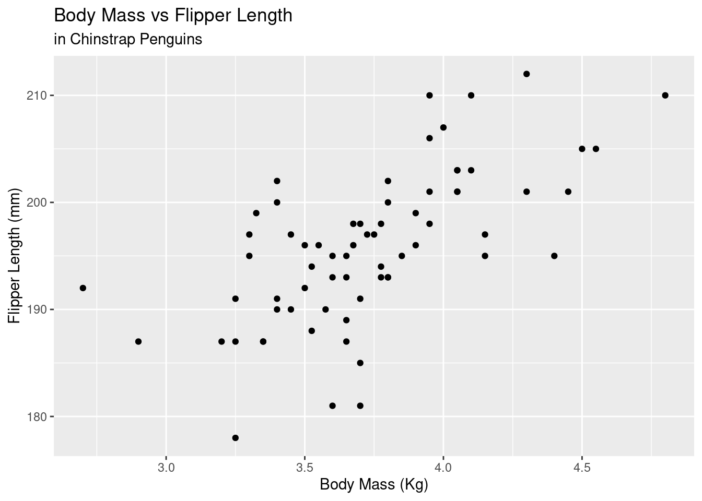
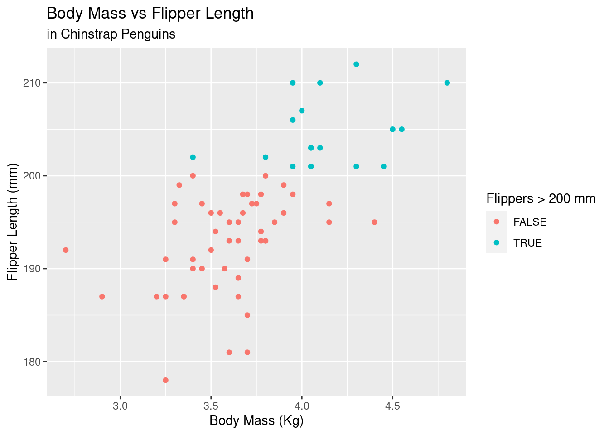

Associated Material
Module: Module 03 - Subsetting
Reading:
Subsetting of vectors
- Using
[] for extracting elements
- Subsetting by index
- Subsetting by boolean vector through conditional statements
- Use of
%in%
Missing Data
- Defining missing data with
NA
- Testing for missing data with
is.na()
- Removal of missing data
[] and is.na()- functions with an
na.rm parameter
Subsetting in 2 dimentions
- Using
[] with 2 arguments for [rows, columns]
- Introducing
select for columns, and filter
for rows from dplyr package
- Choosing and reordering columns with
select
- Use of
between with filter
Piping data between functions
- Use of the
%>% “pipe” from the magrittr
package
Data manipulations
- Creating new columns
- Summarising data
summarise from dplyr- using
group_by to summarise by a categorical
variable
- Sorting data
arrange- Use of
desc to arrange in descending order
Workflows
Data subsetting and manipulations combined together with pipes to
then go into ggplot.
Exercises
- Create the following vector and remove the missing values from
it
missing_vec <- c(5, 32, NA, 94, NA, 1)
- Load the Palmer Penguins dataset as below and remove all the missing
values, save to a variable called penguins_complete.
# if you don't have it installed
# install.packages('palmerpenguins')
library(tidyverse)
library(palmerpenguins)
penguins
How many penguins in pengiuns_complete have a
bill_length_mm larger than 38 mm (the n() from
dplyr might prove useful). Does this number change by
- species?
- island?
with penguins_complete, make a plot comparing body mass
(in kg) versus flipper length for only the Chinstrap penguins. Create
nice labels.
With the same data as 4), create a new column
long_flippers that specifies TRUE/FALSE if the flipper
length is longer than 200 mm, and use this column to colour your plot so
that the long flipper penguins get highlighted
Example solutions
missing_vec <- c(5, 32, NA, 94, NA, 1)
missing_vec[!is.na(missing_vec)]
#> [1] 5 32 94 1
penguins_complete <- penguins %>%
filter(!is.na(bill_length_mm) |
!is.na(bill_depth_mm) |
!is.na(flipper_length_mm) |
!is.na(body_mass_g)|
!is.na(sex))
penguins_complete %>%
filter(bill_length_mm > 38) %>%
summarise(n = n())
#> # A tibble: 1 × 1
#> n
#> <int>
#> 1 280
# a)
penguins_complete %>%
filter(bill_length_mm > 38) %>%
group_by(species) %>%
summarise(n = n())
#> # A tibble: 3 × 2
#> species n
#> <fct> <int>
#> 1 Adelie 89
#> 2 Chinstrap 68
#> 3 Gentoo 123
# b)
penguins_complete %>%
filter(bill_length_mm > 38) %>%
group_by(island) %>%
summarise(n = n())
#> # A tibble: 3 × 2
#> island n
#> <fct> <int>
#> 1 Biscoe 150
#> 2 Dream 99
#> 3 Torgersen 31
penguins_complete %>%
mutate(body_mass_kg = body_mass_g/1000) %>%
filter(species == "Chinstrap") %>%
ggplot(mapping = aes(x = body_mass_kg, y = flipper_length_mm)) +
geom_point() +
labs(x = "Body Mass (Kg)",
y = "Flipper Length (mm)",
title = "Body Mass vs Flipper Length",
subtitle = "in Chinstrap Penguins")

penguins_complete %>%
mutate(body_mass_kg = body_mass_g/1000,
long_flippers = flipper_length_mm > 200) %>%
filter(species == "Chinstrap") %>%
ggplot(mapping = aes(x = body_mass_kg, y = flipper_length_mm, colour = long_flippers)) +
geom_point() +
labs(x = "Body Mass (Kg)",
y = "Flipper Length (mm)",
title = "Body Mass vs Flipper Length",
subtitle = "in Chinstrap Penguins",
colour = "Flippers > 200 mm")

LS0tCnRpdGxlOiAiWm9vbSBOb3RlczogU2VsZWN0aW5nIGFuZCBGaWx0ZXJpbmcgRGF0YSIKZGF0ZTogIlNlbWVzdGVyIDEsIDIwMjIiCm91dHB1dDoKICBodG1sX2RvY3VtZW50OgogICAgdG9jOiB0cnVlCiAgICB0b2NfZmxvYXQ6IHRydWUKICAgIHRvY19kZXB0aDogMwogICAgY29kZV9kb3dubG9hZDogdHJ1ZQogICAgY29kZV9mb2xkaW5nOiBzaG93Ci0tLQoKYGBge3Igc2V0dXAsIGluY2x1ZGU9RkFMU0V9CmxpYnJhcnkoa25pdHIpCmxpYnJhcnkodGlkeXZlcnNlKQoKa25pdHI6Om9wdHNfY2h1bmskc2V0KAogIGNvbW1lbnQgPSAiIz4iLAogIGZpZy5wYXRoID0gImZpZ3VyZXMvMDMvIiwgIyB1c2Ugb25seSBmb3Igc2luZ2xlIFJtZCBmaWxlcwogIGNvbGxhcHNlID0gVFJVRSwKICBlY2hvID0gVFJVRQopCmBgYAoKPiAjIyMjIEFzc29jaWF0ZWQgTWF0ZXJpYWwKPgo+IE1vZHVsZTogW01vZHVsZSAwMyAtIFN1YnNldHRpbmddKDAzLXN1YnNldC5odG1sKQo+Cj4gUmVhZGluZzoKPgo+IC0gW1IgZm9yIERhdGEgU2NpZW5jZSAtIENoYXB0ZXIgNV0oaHR0cHM6Ly9yNGRzLmhhZC5jby5uei90cmFuc2Zvcm0uaHRtbCkKCgotLS0tCgoKIyMgU3Vic2V0dGluZyBvZiB2ZWN0b3JzCgotIFVzaW5nIGBbXWAgZm9yIGV4dHJhY3RpbmcgZWxlbWVudHMKLSBTdWJzZXR0aW5nIGJ5IGluZGV4Ci0gU3Vic2V0dGluZyBieSBib29sZWFuIHZlY3RvciB0aHJvdWdoIGNvbmRpdGlvbmFsIHN0YXRlbWVudHMKLSBVc2Ugb2YgYCVpbiVgCgojIyMgTWlzc2luZyBEYXRhCgotIERlZmluaW5nIG1pc3NpbmcgZGF0YSB3aXRoIGBOQWAKLSBUZXN0aW5nIGZvciBtaXNzaW5nIGRhdGEgd2l0aCBgaXMubmEoKWAKLSBSZW1vdmFsIG9mIG1pc3NpbmcgZGF0YQogIC0gYFtdYCBhbmQgYGlzLm5hKClgCiAgLSBmdW5jdGlvbnMgd2l0aCBhbiBgbmEucm1gIHBhcmFtZXRlcgogIAojIyBTdWJzZXR0aW5nIGluIDIgZGltZW50aW9ucwoKLSBVc2luZyBgW11gIHdpdGggMiBhcmd1bWVudHMgZm9yIFtyb3dzLCBjb2x1bW5zXQotIEludHJvZHVjaW5nIGBzZWxlY3RgIGZvciBjb2x1bW5zLCBhbmQgYGZpbHRlcmAgZm9yIHJvd3MgZnJvbSBgZHBseXJgIHBhY2thZ2UKICAtIENob29zaW5nIGFuZCByZW9yZGVyaW5nIGNvbHVtbnMgd2l0aCBgc2VsZWN0YAogIC0gVXNlIG9mIGBiZXR3ZWVuYCB3aXRoIGBmaWx0ZXJgCgojIyBQaXBpbmcgZGF0YSBiZXR3ZWVuIGZ1bmN0aW9ucwoKLSBVc2Ugb2YgdGhlIGAlPiVgICJwaXBlIiBmcm9tIHRoZSBgbWFncml0dHJgIHBhY2thZ2UKCiMjIERhdGEgbWFuaXB1bGF0aW9ucwoKLSBDcmVhdGluZyBuZXcgY29sdW1ucwogIC0gVXNpbmcgYCRgCiAgLSBVc2luZyBgbXV0YXRlYAotIFN1bW1hcmlzaW5nIGRhdGEKICAtIGBzdW1tYXJpc2VgIGZyb20gYGRwbHlyYAogIC0gdXNpbmcgYGdyb3VwX2J5YCB0byBzdW1tYXJpc2UgYnkgYSBjYXRlZ29yaWNhbCB2YXJpYWJsZQotIFNvcnRpbmcgZGF0YQogIC0gYGFycmFuZ2VgCiAgLSBVc2Ugb2YgYGRlc2NgIHRvIGFycmFuZ2UgaW4gZGVzY2VuZGluZyBvcmRlcgogIAojIyBXb3JrZmxvd3MKCkRhdGEgc3Vic2V0dGluZyBhbmQgbWFuaXB1bGF0aW9ucyBjb21iaW5lZCB0b2dldGhlciB3aXRoIHBpcGVzIHRvIHRoZW4gZ28gaW50byBnZ3Bsb3QuCgoKIyMgRXhlcmNpc2VzCgoxLiBDcmVhdGUgdGhlIGZvbGxvd2luZyB2ZWN0b3IgYW5kIHJlbW92ZSB0aGUgbWlzc2luZyB2YWx1ZXMgZnJvbSBpdApgYGB7ciBldmFsID0gRkFMU0V9Cm1pc3NpbmdfdmVjIDwtIGMoNSwgMzIsIE5BLCA5NCwgTkEsIDEpCmBgYAoKCjIuIExvYWQgdGhlIFBhbG1lciBQZW5ndWlucyBkYXRhc2V0IGFzIGJlbG93IGFuZCByZW1vdmUgYWxsIHRoZSBtaXNzaW5nIHZhbHVlcywgc2F2ZSB0byBhIHZhcmlhYmxlIGNhbGxlZCAqcGVuZ3VpbnNfY29tcGxldGUqLgoKYGBge3IsIGV2YWw9RkFMU0V9CiMgaWYgeW91IGRvbid0IGhhdmUgaXQgaW5zdGFsbGVkCiMgaW5zdGFsbC5wYWNrYWdlcygncGFsbWVycGVuZ3VpbnMnKQoKbGlicmFyeSh0aWR5dmVyc2UpCmxpYnJhcnkocGFsbWVycGVuZ3VpbnMpCnBlbmd1aW5zCmBgYAoKCjMuIEhvdyBtYW55IHBlbmd1aW5zIGluICpwZW5naXVuc19jb21wbGV0ZSogaGF2ZSBhIGJpbGxfbGVuZ3RoX21tIGxhcmdlciB0aGFuIDM4IG1tICh0aGUgYG4oKWAgZnJvbSBgZHBseXJgIG1pZ2h0IHByb3ZlIHVzZWZ1bCkuIERvZXMgdGhpcyBudW1iZXIgY2hhbmdlIGJ5CiAgICBhLiBzcGVjaWVzPwogICAgYi4gaXNsYW5kPwoKNC4gd2l0aCAqcGVuZ3VpbnNfY29tcGxldGUqLCBtYWtlIGEgcGxvdCBjb21wYXJpbmcgYm9keSBtYXNzIChpbiBrZykgdmVyc3VzIGZsaXBwZXIgbGVuZ3RoIGZvciBvbmx5IHRoZSBDaGluc3RyYXAgcGVuZ3VpbnMuIENyZWF0ZSBuaWNlIGxhYmVscy4KICAKNS4gV2l0aCB0aGUgc2FtZSBkYXRhIGFzIDQpLCBjcmVhdGUgYSBuZXcgY29sdW1uIGBsb25nX2ZsaXBwZXJzYCB0aGF0IHNwZWNpZmllcyBUUlVFL0ZBTFNFIGlmIHRoZSBmbGlwcGVyIGxlbmd0aCBpcyBsb25nZXIgdGhhbiAyMDAgbW0sIGFuZCB1c2UgdGhpcyBjb2x1bW4gdG8gY29sb3VyIHlvdXIgcGxvdCBzbyB0aGF0IHRoZSBsb25nIGZsaXBwZXIgcGVuZ3VpbnMgZ2V0IGhpZ2hsaWdodGVkCgoKIyMjIEV4YW1wbGUgc29sdXRpb25zCgoxLgoKYGBge3Igem4wM19zb2xuMSwgY2xhc3Muc291cmNlID0gImZvbGQtaGlkZSJ9Cm1pc3NpbmdfdmVjIDwtIGMoNSwgMzIsIE5BLCA5NCwgTkEsIDEpCgptaXNzaW5nX3ZlY1shaXMubmEobWlzc2luZ192ZWMpXQpgYGAKCi0tLS0tCgoyLgoKYGBge3Igem4wM19zb2xuMiwgY2xhc3Muc291cmNlID0gImZvbGQtaGlkZSJ9CnBlbmd1aW5zX2NvbXBsZXRlIDwtIHBlbmd1aW5zICU+JSAKICBmaWx0ZXIoIWlzLm5hKGJpbGxfbGVuZ3RoX21tKSB8IAogICAgICAgICAgICFpcy5uYShiaWxsX2RlcHRoX21tKSB8IAogICAgICAgICAgICFpcy5uYShmbGlwcGVyX2xlbmd0aF9tbSkgfAogICAgICAgICAgICFpcy5uYShib2R5X21hc3NfZyl8IAogICAgICAgICAgICFpcy5uYShzZXgpKQpgYGAKCgotLS0tLQoKMy4gCgpgYGB7ciB6bjAzX3NvbG4zLCBjbGFzcy5zb3VyY2UgPSAiZm9sZC1oaWRlIn0KcGVuZ3VpbnNfY29tcGxldGUgJT4lIAogIGZpbHRlcihiaWxsX2xlbmd0aF9tbSA+IDM4KSAlPiUgCiAgc3VtbWFyaXNlKG4gPSBuKCkpCgojIGEpCnBlbmd1aW5zX2NvbXBsZXRlICU+JSAKICBmaWx0ZXIoYmlsbF9sZW5ndGhfbW0gPiAzOCkgJT4lIAogIGdyb3VwX2J5KHNwZWNpZXMpICU+JSAKICBzdW1tYXJpc2UobiA9IG4oKSkKCiMgYikKcGVuZ3VpbnNfY29tcGxldGUgJT4lIAogIGZpbHRlcihiaWxsX2xlbmd0aF9tbSA+IDM4KSAlPiUgCiAgZ3JvdXBfYnkoaXNsYW5kKSAlPiUgCiAgc3VtbWFyaXNlKG4gPSBuKCkpCmBgYAoKLS0tLS0KCjQuCgpgYGB7ciB6bjAzX3NvbG40LCBjbGFzcy5zb3VyY2UgPSAiZm9sZC1oaWRlIn0KcGVuZ3VpbnNfY29tcGxldGUgJT4lIAogIG11dGF0ZShib2R5X21hc3Nfa2cgPSBib2R5X21hc3NfZy8xMDAwKSAlPiUgCiAgZmlsdGVyKHNwZWNpZXMgPT0gIkNoaW5zdHJhcCIpICU+JSAKICBnZ3Bsb3QobWFwcGluZyA9IGFlcyh4ID0gYm9keV9tYXNzX2tnLCB5ID0gZmxpcHBlcl9sZW5ndGhfbW0pKSArCiAgZ2VvbV9wb2ludCgpICsKICBsYWJzKHggPSAiQm9keSBNYXNzIChLZykiLAogICAgICAgeSA9ICJGbGlwcGVyIExlbmd0aCAobW0pIiwKICAgICAgIHRpdGxlID0gIkJvZHkgTWFzcyB2cyBGbGlwcGVyIExlbmd0aCIsCiAgICAgICBzdWJ0aXRsZSA9ICJpbiBDaGluc3RyYXAgUGVuZ3VpbnMiKQpgYGAKCi0tLS0tCgo1LiAKCmBgYHtyIHpuMDNfc29sbjUsIGNsYXNzLnNvdXJjZSA9ICJmb2xkLWhpZGUifQpwZW5ndWluc19jb21wbGV0ZSAlPiUgCiAgbXV0YXRlKGJvZHlfbWFzc19rZyA9IGJvZHlfbWFzc19nLzEwMDAsCiAgICAgICAgIGxvbmdfZmxpcHBlcnMgPSBmbGlwcGVyX2xlbmd0aF9tbSA+IDIwMCkgJT4lIAogIGZpbHRlcihzcGVjaWVzID09ICJDaGluc3RyYXAiKSAlPiUgCiAgZ2dwbG90KG1hcHBpbmcgPSBhZXMoeCA9IGJvZHlfbWFzc19rZywgeSA9IGZsaXBwZXJfbGVuZ3RoX21tLCBjb2xvdXIgPSBsb25nX2ZsaXBwZXJzKSkgKwogIGdlb21fcG9pbnQoKSArCiAgbGFicyh4ID0gIkJvZHkgTWFzcyAoS2cpIiwKICAgICAgIHkgPSAiRmxpcHBlciBMZW5ndGggKG1tKSIsCiAgICAgICB0aXRsZSA9ICJCb2R5IE1hc3MgdnMgRmxpcHBlciBMZW5ndGgiLAogICAgICAgc3VidGl0bGUgPSAiaW4gQ2hpbnN0cmFwIFBlbmd1aW5zIiwKICAgICAgIGNvbG91ciA9ICJGbGlwcGVycyA+IDIwMCBtbSIpCgpgYGAK